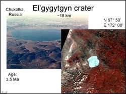
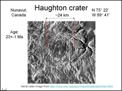
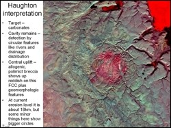

 For this study two craters were selected. The first was the El'gygytgyn crater, located in Chukotka region of Russia. This crater is about 18 km in diameter and 3.5 Ma old. The other was the Houghton crater located in the north-west territories of Canada. The objective of this study was to use digitally process available remote sensing images to understand crater morphology. Another objective was to highlight surface features of interest such as specific rock types, vegetation, uplift zones etc.
 Initial digital image processing of remote sensing data involved cloud masking and contrast stretching. Cloud masking was carried out on Landsat ETM image by using the formula: (band4 + band5) / (band4 - band5). another formula applied was (band5 + band7) / (band5 - band7). Other digital techniques applied were NDVI calculation (to highlight the central part of the crater which typically has low vegetation) and image filtering to enhance edges associated with the crater cavity.
 Various false color composites were generated to enhance morphological features. The combination of bands 3, 5 and 7 coded in RGB, respectively (see adjacent figure) proved to be the best for analysis as the central uplift areas stands out well on this composite (uplift zone appears in redding hues). Analysis of SAR imagery along with data in the visible and infrared region will further help to study features related to impact craters, and this is highly recommended.